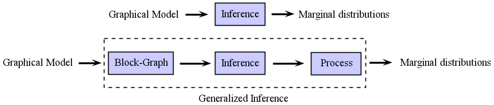

Finding Non-overlapping Clusters for Generalized Inference Over Graphical Models
Divyanshu Vats and José M. F. Moura

Abstract
Graphical models use graphs to compactly capture stochastic dependencies amongst a collection of random variables. Inference over graphical models corresponds to finding marginal probability distributions given joint probability distributions. In general, this is computationally intractable, which has led to a quest for finding efficient approximate inference algorithms. We propose a framework for generalized inference over graphical models that can be used as a wrapper for improving the estimates of approximate inference algorithms. Instead of applying an inference algorithm to the original graph, we apply the inference algorithm to a block-graph, defined as a graph in which the nodes are non-overlapping clusters of nodes from the original graph. This results in marginal estimates of a cluster of nodes, which we further marginalize to get the marginal estimates of each node. Our proposed block-graph construction algorithm is simple, efficient, and motivated by the observation that approximate inference is more accurate on graphs with longer cycles. We present extensive numerical simulations that illustrate our block-graph framework with a variety of inference algorithms (e.g., those in the libDAI software package). These simulations show the improvements provided by our framework.
Preprint
[
preprint]
Code
[
download]: Matlab and libDAI code - see README.txt for details.
Data
[
download]: Graphical models used in the paper.